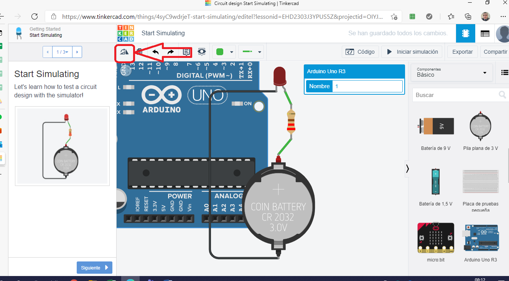

Introducción a Arduino
Visualización del documento técnico de Arduino:

Introducción a Robotica
Aquí puedes colocar la descripción de las actividades, bitácoras o proyectos realizados durante esta semana.
Semana 3
Contenido correspondiente a la siguiente etapa del proyecto.